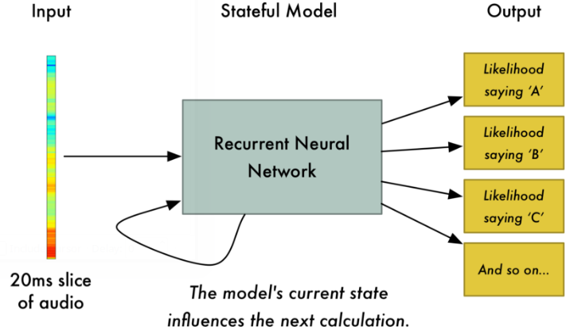

Es el desarrollo de metodologías y tecnologías que permiten el reconocimiento y la traducción del lenguaje hablado en texto por computadora.Incorpora conocimiento e investigación en los campos de la lingüística, la informática y la ingeniería eléctrica.
El reconocimiento de voz está invadiendo nuestras vidas. Está integrado en nuestros teléfonos, consolas de juegos y relojes inteligentes. Incluso está automatizando nuestros hogares. Existen dispositivos como Amazon Echo Dot, una caja mágica que le permite pedir pizza, obtener un informe del clima o incluso comprar bolsas de basura, simplemente hablando en voz alta. Pero el reconocimiento de voz ha existido por décadas, entonces, ¿por qué ahora está llegando a la corriente principal? Por el uso del aprendizaje automático
A pesar de que existen softwares de traducción de voz a texto digital, hay un problema que no pueden solucionar sin un método de aprendizaje, los diferentes tonos y dialectos, además de otros problemas más complejos como puntuación. El aprendizaje profundo finalmente hizo que el reconocimiento de voz fuera lo suficientemente preciso como para ser útil fuera de ambientes cuidadosamente controlados.
El gran problema es que el habla varía en velocidad. Una persona puede decir "hello!" Muy rápido y otra persona puede decir "¡heeeelllllllllllllooooo!" Muy lentamente, produciendo un archivo de sonido mucho más largo con mucha más información. Ambos archivos de sonido deberían reconocerse exactamente como el mismo texto: "¡Hola!" Alinear automáticamente los archivos de audio de varias longitudes con un fragmento de texto de longitud fija resulta ser bastante difícil. Para evitar esto, tenemos que usar algunos trucos especiales y procesos adicionales además de una red neuronal profunda.
Uno de los pasos antes de seguir es transformar el sonido entrante, que proviene en versión analógica a digital. Las ondas sonoras son unidimensionales. En todo momento en el tiempo, tienen un valor único basado en la altura de la onda. Para convertir esta onda de sonido en números, simplemente registramos la altura de la onda en puntos equiespaciados.
Esto se llama muestreo. Estamos tomando una lectura miles de veces por segundo y registrando un número que representa la altura de la onda de sonido en ese punto en el tiempo. Por ejemplo el audio de "calidad de CD" se muestrea a 44.1khz (44,100 lecturas por segundo). Pero para el reconocimiento de voz, una frecuencia de muestreo de 16khz (16,000 muestras por segundo) es suficiente para cubrir el rango de frecuencia del habla humana.
Al formar la onda digital los muestreos pueden tener espacios o brechas de perdida de datos en estos casos utilizamos el teorema de muestreo de Nyquist-Shannon y podemos usar las matemáticas para reconstruir perfectamente la onda de sonido original de las muestras espaciadas, siempre que muestreemos al menos el doble de la frecuencia más alta que queremos grabar.
Una vez obtenida una matriz de las ondas de forma digital, pasamos a el proceso de ésta. Nos podríamos alimentar a estos números a una red neuronal. Pero es difícil tratar de reconocer patrones de discurso procesando estas muestras directamente. En cambio, podemos hacer que el problema sea más fácil al hacer un pre-procesamiento de los datos de audio al agruparlos en fragmentos.
Para hacer que esta información sea más fácil de procesar para una red neuronal, vamos a dividir esta compleja onda de sonido en sus partes componentes. Vamos a dividir las partes de tono bajo, las siguientes partes de tono más bajo, y así sucesivamente. Luego, al sumar cuánta energía hay en cada una de esas bandas de frecuencia (de menor a mayor), creamos una huella digital de este fragmento de audio.
Ahora que tenemos nuestro audio en un formato que es fácil de procesar, lo alimentaremos a una red neuronal profunda. La entrada a la red neuronal será de 20 milisegundos de audio. Para cada pequeña porción de audio, tratará de descifrar la letra que corresponde al sonido que se está hablando actualmente.
Utilizaremos una red neuronal recurrente, es decir, una red neuronal que tenga una memoria que influya en las predicciones futuras. Esto se debe a que cada letra que predice debería afectar la probabilidad de que la próxima letra también lo haga. Por ejemplo, si hemos dicho "HEL" hasta el momento, es muy probable que diremos "LO" al lado de terminar la palabra "HELLO". Es mucho menos probable que digamos algo impronunciable a continuación como "ASD". Así que tener ese recuerdo de predicciones previas ayuda a la red neuronal a hacer predicciones más precisas en el futuro.
Después de que ejecutamos nuestro clip de audio completo a través de la red neuronal (un fragmento a la vez), terminaremos con un mapeo de cada fragmento de audio a las letras más probables que se hablen durante ese fragmento.
¿Pero qué pasa si alguien dice 'Hilo'? Es una palabra válida. Por supuesto, es posible que alguien haya dicho "Hilo" en lugar de "Hola". Pero un sistema de reconocimiento de voz como este (entrenado en un español no nativo) básicamente nunca producirá "Hilo" como transcripción.